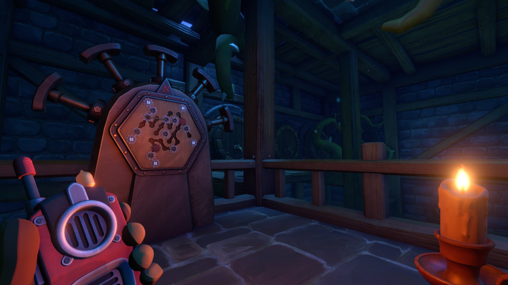
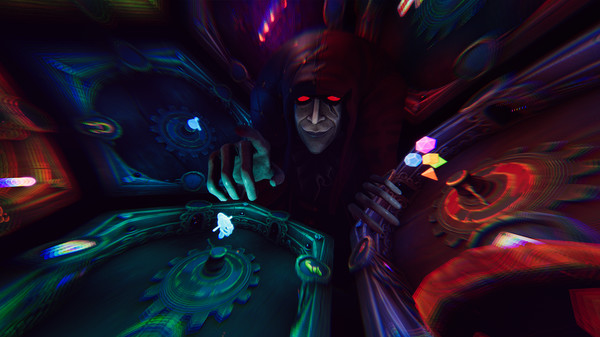

What is it?
The We Were Here franchise was developed by Total Mayhem Games. The first game "We Were Here" was released on Feb. 3, 2017. The original game "We Were Here" was developed as a part of a student project at Rotterdam University in the Netherlands. It was submitted to the Independent Games Festival in 2018. However, it won Best Indie Game Award in 2017. The studio started as just fifteen students from the university and continued on the following years to make 3 sequels to the original We Were Here game. Sequels; We Were Here Too, We Were Here Together, and We Were Here Forever.
We Were Here is the 1st of 4 games in the franchise. You and a friend are separated in a frigid castle and must communicate through walkie-talkies (in game) or just by using another communication service such as Discord (preferred). But, communication is key, this game is not possible to play without talking to each other. As you make your way through each puzzle each player must describe in detail different pictures, symbols, floor layout, valves, etc... and must use said information to solve puzzles in the respected rooms. If you enjoy puzzle games, this is the golden standard of co-op puzzle games. Another bonus is that the first game of the series is currently FREE, and is expected to stay that way!
